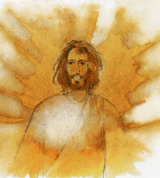
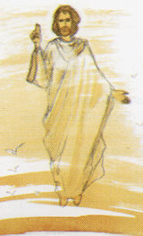
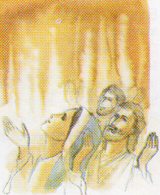
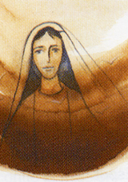
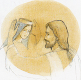

<!--
  Generated template for the ChapeletGlorieuxPage page.

  See http://ionicframework.com/docs/components/#navigation for more info on
  Ionic pages and navigation.
-->
<script src="chapelet-glorieux.ts"></script>
<ion-header>

  <ion-navbar>
    <ion-title *ngIf="language=='french'">Mystères glorieux</ion-title>
    <ion-title *ngIf="language=='english'">Glorious mysteries</ion-title>
    <ion-title *ngIf="language=='spanish'">Misterios gloriosos</ion-title>
  </ion-navbar>

</ion-header>


<ion-content padding>
  <label *ngIf="language=='french'">
  <ion-row>
    <ion-col>


      <h6>Signe de croix<br>

        CREDO + PATER + 3 AVE + GLORIA + Ô MARIE CONÇUE SANS PECHE…</h6>
<hr style="width: 100%; margin-top: 20px; margin-bottom: 20px;">

      <h6>1er MYSTERE GLORIEUX <br>: LA RESURRECTION DE JESUS

        des Actes des Apôtres 13, 30-33</h6>

      <p text-center></p><br>

      Dieu a ressuscité Jésus d’entre les morts. Il est apparu pendant plusieurs jours à ceux qui étaient montés avec lui de Galilée à Jérusalem, et qui sont maintenant ses témoins devant le peuple. Et nous vous annonçons cette Bonne Nouvelle : la promesse que Dieu avait faite à nos pères, il l’a entièrement accomplie pour nous, leurs enfants, en ressuscitant Jésus.

      <br> <strong>MEDITATION :</strong>
      Aujourd’hui encore,  prenons conscience de l’amour gratuit que   Dieu  a pour chacun de nous, et l’humanité entière ;  affirmons notre Foi en Jésus Christ ressuscité.

      <br><strong>INTENTION :</strong>
      Avec Marie, Notre Mère, prions pour  remercier, le Pape François et tous les évêques prêtres, religieux et religieuses, qui vivent, témoignent et proclament chaque jour la Bonne Nouvelle ;
      Prions  aussi, pour toutes les sœurs et pères âgé(e)s qui sont faibles ou malades et qui vivent dans les maisons de retraites afin qu’ils sachent que nous les aimons et les remercions pour leur exemple.
      Demandons aussi, la Paix dans le monde et dans nos cœurs.

      <br><strong>PATER +10 AVE + GLORIA + Ô MARIE CONÇUE SANS PECHE…</strong>

<hr style="width: 100%; margin-top: 20px; margin-bottom: 20px;">
      <h6>2ème MYSTERE GLORIEUX :<br> L’ASCENSION DE JESUS

        de la lettre de Saint Paul aux Colossiens 3,1-2</h6>

      <p text-center></p><br>

      Vous êtes ressuscités avec le Christ. Recherchez donc les réalités d’en haut : c’est là qu’est le Christ, assis à la droite de Dieu. Tendez-vers les réalités d’en haut, et non vers celles de la terre.

      <br><strong>MEDITATION :</strong>
      Nous sommes invités à diriger notre regard vers Jésus Christ Ressuscité afin qu’il nous aide à  discerner la présence de Dieu dans notre vie.

      <br><strong>INTENTION :</strong>
      Avec Marie, Notre Mère  prions  pour tous nos frères et sœurs qui n’ont pas d’espoir et qui vivent des situations  très difficiles afin qu’ils retrouvent l’espérance d’une vie meilleure.
      Demandons  aussi la Justice sociale et la Paix dans le monde.

      <br><strong>PATER +10 AVE + GLORIA + Ô MARIE CONÇUE SANS PECHE…</strong>
<hr style="width: 100%; margin-top: 20px; margin-bottom: 20px;">

      <h6>3ème MYSTERE GLORIEUX :<br> LA PENTECOTE

        de la lettre de Saint Paul aux Romains 8,11</h6>

      <p text-center></p><br>

      Si l’Esprit de celui qui a ressuscité Jésus d’entre les morts habite en vous, celui qui a ressuscité Jésus d’entre les morts donnera aussi la vie à vos corps mortels par Son Esprit qui habite en vous.

      <br><strong>MEDITATION :</strong>
      L’Esprit de Dieu vit en nous, car Dieu nous aime et ne nous laisse jamais seul.

      <br><strong>INTENTION :</strong>
      Avec Marie, Notre Mère  prions pour  la conversion  de   tous nos frères et sœurs qui ne croient pas ou refusent de croire en Dieu. Prions aussi   pour les familles, pour les enfants.

      <br><strong>PATER +10 AVE + GLORIA + Ô MARIE CONÇUE SANS PECHE…</strong>

<hr style="width: 100%; margin-top: 20px; margin-bottom: 20px;">
      <h6>4ème MYSTERE GLORIEUX :<br> L’ASSOMPTION DE MARIE

        de la lettre de Saint Paul aux Romains 8, 30</h6>

      <p text-center></p><br>

      Ceux que Dieu destinait à la ressemblance de son Fils, il les a aussi appelés ; Ceux qu’il a appelés, il en a fait des justes ; et ceux qu’il a justifiés, il leur a donné la Gloire.

      <br><strong>MEDITATION :</strong>
      L’Assomption de Marie est un appel à se laisser habiter et guider  par l’Amour de Dieu.

      <br><strong>INTENTION :</strong>
      Prions Marie, Notre Mère pour la  remercier d’avoir choisi la volonté de Dieu : en  répondant OUI à son message d’amour.
      Prions aussi et demandons la Paix et la Justice dans ce monde.

      <br><strong>PATER +10 AVE + GLORIA + Ô MARIE CONÇUE SANS PECHE…</strong>

<hr style="width: 100%; margin-top: 20px; margin-bottom: 20px;">
      <h6>5ème MYSTERE GLORIEUX :<br> LE COURONNEMENT DE MARIE

        de l’Apocalypse 12,1</h6>

      <p text-center></p><br>

      Un grand signe apparut dans le ciel : une femme revêtue du soleil, qui avait la lune sous les pieds et une couronne de douze étoiles sur la tête.

      <br><strong>MEDITATION :</strong>
      C’est la fidélité pleine d’amour que Dieu couronne, parce que Marie a toujours essayé de vivre au quotidien les exigences de l’amour, aujourd’hui encore le chemin de   Sainteté de Marie est le modèle de la sainteté que Dieu veut pour nous.

      <br><strong>INTENTION :</strong>
      Avec Marie, Notre Mère, prions  pour avoir cette disponibilité de cœur à accueillir la Parole de Dieu.
      Prions aussi, toutes les intentions des pèlerins, pour nos intentions personnelles et pour la Paix dans le Monde.
      <br>
      <strong>PATER +10 AVE + GLORIA + Ô MARIE CONÇUE SANS PECHE…</strong>
      <br><br>
      <strong>Notre Dame de la Médaille Miraculeuse, Priez pour nous,</strong><br>
      <strong>Sainte Mère de Dieu, priez pour nous,</strong><br>
      <strong>Saint Joseph, priez pour nous,</strong><br>
      <strong>Saint Vincent de Paul, priez pour nous,</strong><br>
      <strong>Sainte Louise de Marillac, priez pour nous,</strong><br>
      <strong>Sainte Catherine Labouré, priez pour nous,</strong><br>
      <strong>Tous les Saints et Saintes du jour, priez pour nous.</strong><br>
      <br><strong>Signe de croix</strong>

    </ion-col>
  </ion-row>

  </label>

    <label *ngIf="language=='english'">

    <h6>Cross Signing <br>


    CREDO + PATER + 3 AVE + GLORIA + O MARIE CONCEIVED WITHOUT SIN ...</h6>

      <hr style="width: 100%; margin-top: 20px; margin-bottom: 20px;">

      <h6>1st Glorious Mystery <br>: Resurrection of Jesus-Christ


    The Resurrection
    Acts 13, 30-33</h6>
    But God raised him from the dead, and for many days he was seen by those who had traveled with him from Galilee to Jerusalem. They are now his witnesses to our people. « We tell you the good news: What God promised our ancestors he has fulfilled for us, their children, by raising up Jesus. »

        <p text-center></p><br>
      <br><strong>MEDITATION:</strong>
    Even today, let us become aware of the free love that God has for each of us, and for the whole humanity; affirm our Faith in risen Jesus Christ.

      <br><strong>INTENTION:</strong>
    With Mary, Our Mother, let us pray to thank Pope Francis and all the bishops, priests and religious, who live, testify and proclaim the Good News every day;
    Also, let us pray for all the elderly sisters and fathers who are weak or sick and who live in retirement homes so they know we love them and thank them for their example.
    Let's ask also for peace in the world and in our hearts.

      <br><strong>PATER + 10 AVE + GLORIA + O MARIE CONCEIVED WITHOUT SIN ...</strong>

      <hr style="width: 100%; margin-top: 20px; margin-bottom: 20px;">


    <h6>Second Glorious Mystery :<br> The Ascension of Jesus-Christ


    Colossians 3, 1-2</h6>
    « Since, then, you have been raised with Christ, set your hearts on things above, where Christ is, seated at the right hand of God. 2  Set your minds on things above, not on earthly things. »

       <p text-center></p><br>
      <br><strong>MEDITATION:</strong>
    We are invited to focus our gaze onto the Risen Christ to help us discern the presence of God in our lives.

      <br><strong>INTENTION:</strong>
    With Mary, Our Mother, we pray for all our brothers and sisters who have no hope and who live in very difficult situations so that they can find the hope of a better life.
    Also ask for Social Justice and Peace in the world.

      <br><strong>PATER + 10 AVE + GLORIA + O MARIE CONCEIVED WITHOUT SIN ..</strong>

      <hr style="width: 100%; margin-top: 20px; margin-bottom: 20px;">

      <h6>Third Glorious Mystery: <br> The Pentecost
        <p text-center></p><br>
    Romans: 8,11</h6>
    « And if the Spirit of him who raised Jesus from the dead is living in you, he who raised Christ from the dead will also give life to your mortal bodies because of his Spirit who lives in you. »

      <br><strong>MEDITATION:</strong>
    The Spirit of God lives in us, because God loves us and never leaves us alone.

      <br><strong>INTENTION:</strong>
    With Mary our Mother, let us pray for the conversion of all our brothers and sisters who do not believe or refuse to believe in God. Let us pray also for families, for children.

      <br><strong>PATER + 10 AVE + GLORIA + O MARIE CONCEIVED WITHOUT SIN ..</strong>


      <hr style="width: 100%; margin-top: 20px; margin-bottom: 20px;">

    <h6>The fourth Glorious Mystery: <br> The Assumption
        <p text-center></p><br>


      Romans: 8,30 </h6>
    « And those he predestined, he also called; those he called, he also justified; those he justified, he also glorified. »

      <br><strong>MEDITATION:</strong>
    The Assumption of Mary is a call to be inhabited and guided by the Love of God.

      <br><strong>INTENTION:</strong>
    Let us pray Mary our Mother, to thank her for having chosen the will of God, by answering YES to her message of love.
    Let us also pray and ask for Peace and Justice in this world.


      <br><strong>PATER + 10 AVE + GLORIA + O MARIE CONCEIVED WITHOUT SIN ..</strong>

      <hr style="width: 100%; margin-top: 20px; margin-bottom: 20px;">

    <h6>The fifth Glorious Mystery: <br> The Crowning of the Virgin Mary


      Apocalypse: 12,1 </h6>
    « A great sign appeared in heaven: a woman clothed with the sun, with the moon under her feet and a crown of twelve stars on her head. »

        <p text-center></p><br>
      <br><strong>MEDITATION:</strong>
    It is the fidelity full of love that God crowns, because Mary has always tried to live the daily demands of love. Even today the path of Holiness of Mary is the model of holiness that God wants for we.

      <br><strong>INTENTION:</strong>
    With Mary, Our Mother, let us pray for this willingness to accept the Word of God.
    Let us pray also, for all the intentions of the pilgrims, for our personal intentions and for Peace in the World.

      <br><strong>PATER + 10 AVE + GLORIA + O MARIE CONCEIVED WITHOUT SIN ..</strong>

  </label>


  <label *ngIf="language=='spanish'">


    <h6>Señal de la cruz <br>

    CREDO + PATER + 3 AVE + GLORIA + Oh María sin pecado concebida…</h6>

    <hr style="width: 100%; margin-top: 20px; margin-bottom: 20px;">

    <h6>1er MISTERIO GLORIOSO: LA RESURRECCIÓN DE JESÚS

    de los Hechos de los Apóstoles 13, 30-33 </h6>

    <p text-center></p><br>

    Dios resucitó a Jesús de la muerte. Apareció por muchos días a los que habían venido con él desde Galilea a Jerusalén, y ahora son sus testigos ante el pueblo. Y te anunciamos estas Buenas Nuevas: la promesa que Dios hizo a nuestros padres, la cumplió por completo para nosotros, sus hijos, al resucitar a Jesús.
     


    <br><strong>MEDITACIÓN:</strong>
    Incluso hoy, tomemos conciencia del amor libre que Dios tiene para cada uno de nosotros y para toda la humanidad; afirma nuestra fe en Jesucristo resucitado.

    <br><strong>INTENCION:</strong>
    Con María, Nuestra Madre, recemos para agradecer al Papa Francisco y a todos los obispos, sacerdotes y religiosos, que viven, testifican y proclaman la Buena Nueva todos los días;
    Además, ore por todas las hermanas y padres ancianos que están débiles o enfermos y que viven en hogares de ancianos para saber que los amamos y agradecerles por su ejemplo.
    Pidamos también paz en el mundo y en nuestros corazones.
     
    <br><strong>PATER + 3 AVE + GLORIA + Oh María sin pecado concebida…</strong>

<hr style="width: 100%; margin-top: 20px; margin-bottom: 20px;">
    <h6>2º MISTERIO GLORIOSO: LA ASCENSIÓN DE JESÚS <br>
    de la carta de San Pablo a los Colosenses 3,1-2</h6>

     <p text-center></p><br>

    Tú eres resucitado con Cristo. Busca las realidades desde arriba: aquí es donde Cristo se sienta a la diestra de Dios. Tienden a las realidades de arriba, no a las de la tierra.


    <br><strong>MEDITACIÓN:</strong>
    Estamos invitados a dirigir nuestra mirada hacia Cristo Resucitado para ayudarnos a discernir la presencia de Dios en nuestras vidas.


    <br><strong>INTENCION:</strong>
    Con María, Nuestra Madre, oramos por todos nuestros hermanos y hermanas que no tienen esperanza y que viven en situaciones muy difíciles para que puedan encontrar la esperanza de una vida mejor.
    También pida Justicia Social y Paz en el mundo.

    <br><strong>PATER + 3 AVE + GLORIA + Oh María sin pecado concebida…</strong>

<hr style="width: 100%; margin-top: 20px; margin-bottom: 20px;">

    <h6>3er MISTERIO GLORIOSO: EL PENTECOTO <br>
    de la carta de San Pablo a los romanos 8,11</h6>

     <p text-center></p><br>

    Si el Espíritu de aquel que levantó a Jesús de entre los muertos mora en ti, el que levantó a Jesús de la muerte también dará vida a tus cuerpos mortales por medio de su Espíritu que mora en ti.
     
    <br><strong>MEDITACIÓN:</strong>
    El Espíritu de Dios vive en nosotros, porque Dios nos ama y nunca nos deja solos.

    <br><strong>INTENCION:</strong>
    Con María, Nuestra Madre ora por la conversión de todos nuestros hermanos y hermanas que no creen o se niegan a creer en Dios. Ora también por las familias, por los niños.

    <br><strong>PATER + 3 AVE + GLORIA + Oh María sin pecado concebida…</strong>


<hr style="width: 100%; margin-top: 20px; margin-bottom: 20px;">

    <h6>4º MISTERIO GLORIOSO: LA ASUNCIÓN DE MARÍA <br>
    de la carta de San Pablo a los Romanos 8, 30</h6>

     <p text-center></p><br>

    Aquellos a quienes Dios quiso para la semejanza de su Hijo, también los llamó; Aquellos a quienes llamó, hizo a los justos; y aquellos a quienes justificó, les dio Gloria.
     
    <br><strong>MEDITACIÓN:</strong>
    La Asunción de María es un llamado a ser habitada y guiada por el Amor de Dios.

    <br><strong>INTENCION:</strong>
    Reza a María, Nuestra Madre, para agradecerle por haber elegido la voluntad de Dios: respondiendo SÍ a su mensaje de amor.
    Oremos también y pidamos Paz y Justicia en este mundo.

    <br><strong>PATER + 3 AVE + GLORIA + Oh María sin pecado concebida…</strong>

<hr style="width: 100%; margin-top: 20px; margin-bottom: 20px;">
    <h6>5º MISTERIO GLORIOSO: LA CORONACIÓN DE MARÍA <br>
    de Apocalipsis 12,1</h6>

     <p text-center></p><br>

    Una gran señal apareció en el cielo: una mujer vestida del sol, con la luna bajo sus pies y una corona de doce estrellas sobre su cabeza.
     
    <br><strong>MEDITACIÓN:</strong>
    Esta es la fidelidad llena de amor que Dios corona, porque María siempre ha tratado de vivir las exigencias diarias de amor, sigue el camino a la santidad de María es el modelo de santidad que Dios quiere nosotros.

    <br><strong>INTENCION:</strong>
    Con María, Nuestra Madre, ore por esta disposición a aceptar la Palabra de Dios.
    Oren también, todas las intenciones de los peregrinos, nuestras intenciones personales y la Paz en el Mundo.
     
    <br><strong>PATER + 3 AVE + GLORIA + Oh María sin pecado concebida…</strong>


    <br><strong>Medalla de Nuestra Señora de la Milagrosa, ruega por nosotros,</strong>
    <br><strong>Santa Madre de Dios, ruega por nosotros,</strong>
    <br><strong>San José, ruega por nosotros,</strong>
    <br><strong>San Vicente de Paúl, ruega por nosotros,</strong>
    <br><strong>Santa Luisa de Marillac, ruega por nosotros,</strong>
    <br><strong>Santa Catalina Labouré, ruega por nosotros,</strong>
    <br><strong>Todos los santos del día, ruega por nosotros.</strong>


  </label>

</ion-content>
